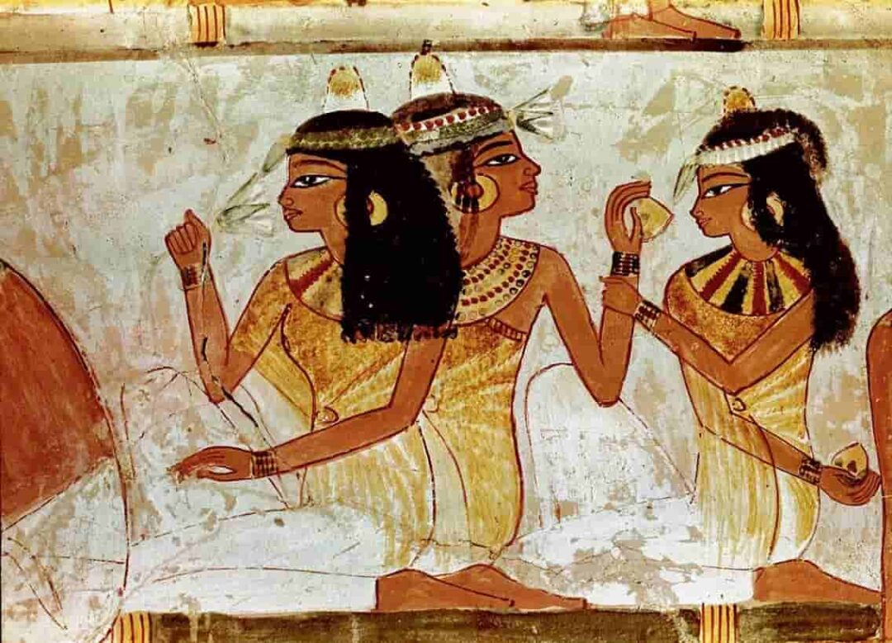
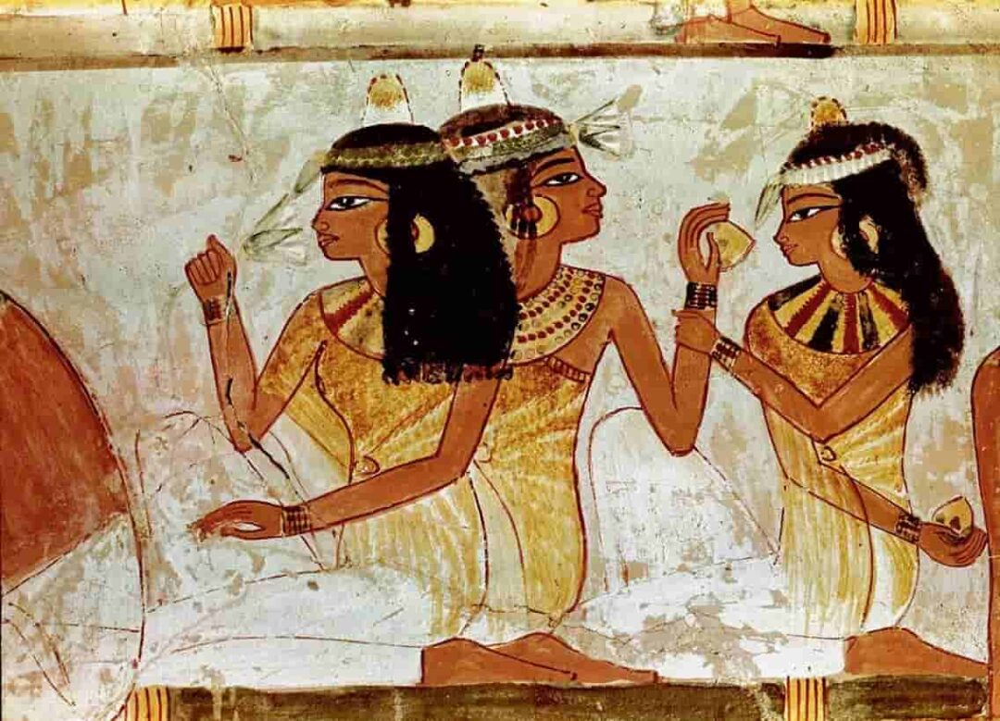

A Historian’s Guide to A Chemist’s Heart
Back to the Ancient Mesopotamians and Babylonians
This ancient civilization is credited with the discovery of fermentation; better known as the art of brewing wine by means of fermenting it to prolong its shelf life as well as to enhance its flavor and potency. It is crucial to know that the Mesopotamians were among the first to master fermentation as they've been able to produce beer as early as the 4th millennium BC. On a similar note, the field of metallurgy was also honed by the Mesopotamians. Metallurgy can be described as the developed techniques used to extract metals from ores, working with copper, bronze, tin, silver, and gold.
Meanwhile, the Babylonians were credited with the advancement of organic chemistry through perfume-making; a staple in their noble houses and commonly associated with higher social statuses.
The Black Lands; Influence of Ancient Egyptians
The papyrus, better known to be the first writing surface, was made in Ancient Egypt and was derived from the pith of the papyrus plant, Cyperus papyrus; a wetland sedge.
The Ancient Egyptians were also credited with the basis of cosmetics. The makeup during such a period in time were primarily created by mixing four lead-based chemicals; galena (which produced dark tones and gloss), cerussite (a white carbonate of lead), laurionite, and phosgenite. Apart from galena, all of these lead-based chemicals are white.
 

Embalming, in Ancient Egypt, utilized a combination of chemicals including natron salt for the dehydration of tissues, various plant and animal fats, plant oils such as castor and juniper oils, and several types of resins with the likes of pine resin, mastic, and elemi. These resins were used to act as antiseptics, antifungals, and waterproof sealants.
To further one's already broadening knowledge, the word "alchemy" was derived from the Greek word, "Khemia" which meant Egypt. In the 7th century, added the prefix "al-”i> to the word Khemia which then meant "The Black Land."
Originally from Ancient Egypt and Mesopotamia, alchemy later spread to Greece, China, as well as the Islamic world. Its definition and usage all around the globe even during such periods in time meant that alchemy was closely tied to the development of early chemistry as alchemists experimented with various substances and techniques which laid the foundation for the progression of modern scientific methods.
Different from alchemy, iatrochemistry is known to be the branch of chemistry that deals with the study of pharmaceuticals and medicinal substances.
Before we progress through time, it's keen to be aware that alchemy has two sides. Its practical side where processes such as distillation, crystallization, and sublimation were developed. Lest we forget, it also has its mystical side which housed the ideas of perfection, immortality, and spiritual transformation.
Through the Oriental Grove; Ancient Chinese
More than 4,000 years ago, the Ancient Chinese civilization was already using copper to cast matter; utilizing their malleable nature to produce ancient copper products which ranged from weapons to daily living articles.
There was also a strong link between alchemy and medicine in ancient China wherein much of the alchemy present within its culture was associated with Taoism and was a key factor in their quest to achieve immortality.
To balance the yin and the yang in one's body, elixirs were concocted to attain "perfect harmony with the universe." For this reason, it is also usually packaged with occults, spirits, and so on.
Around 105 CE, during the Han Dynasty, "true paper" was developed by Cai Lun; a Chinese court official. The first Chinese papers were made from a combination of recycled fishing nets, bamboo, mulberry bark, silk, and hemp.
Another advancement made by this civilization was during the reign of the Tang Dynasty (618-907 AD) wherein gunpowder was discovered by Chinese alchemists. These alchemists accidentally formed gunpowder in their search for an elixir of immortality as they were experimenting with substances like sulfur, charcoal, and saltpeter (potassium nitrate).
The Illumination of Enlightenment; Ancient Greeks and Romans
Known as the central figure in the development of "atomism" and of the atomic theory of the universe prior to John Dalton's modern atomic theory, Democritus once stated, "the universe is composed of two elements: the atoms and the void in which they exist and move." Though he was not entirely incorrect, his theory would later be refined and reanalyzed by future scientists in the modern era of chemistry. Apart from his theory, Democritus was also known for his art of making alloys.
Aristotle, meanwhile, was known for his major role in the art of philosophy as well as rhetoric. He made several contributions related to early atomic theory and to chemistry itself. However, his theory contradicted that of Democritus and due to his popularity during such a period, his theory took precedence in the collective consciousness of his fellow men.
According to Aristotle, matter was composed of four elements: earth, fire, air, and water. Of course, in modern chemistry, his theory has been debunked.